<title>Item page: the name's pen</title>
<meta name="claude:viewport-fit-sides" content="cover">
<link rel="stylesheet" href="tokens.css">
<!-- A mockup (design-system skill, references/mockups.md). Every picture is the real app, signed in
     as the demo account, with the proposal drawn into its page before the screenshot. -->
<style>
  body { margin: 0; background: var(--canvas); color: var(--ink); font-family: var(--font-sans); }
  .mockup-page { padding-left: max(16px, env(safe-area-inset-left, 0px)); padding-right: max(16px, env(safe-area-inset-right, 0px));
    padding-block: var(--space-8, 32px) var(--space-16, 64px); max-width: 1360px; margin: 0 auto; display: grid; gap: var(--space-12, 48px); }
  .mockup-head { display: grid; gap: var(--space-2, 8px); max-width: 70ch; }
  .mockup-head h1, .option h2, .option h3 { margin: 0; text-wrap: balance; }
  .mockup-head p, .option p, .option li { margin: 0; }
  .option ul.points { margin: 0; padding-left: 1.2em; display: grid; gap: 4px; max-width: 75ch; }
  .mockup-meta { color: var(--ink-secondary); }
  .option { display: grid; gap: var(--space-4, 16px); border-top: 1px solid var(--line); padding-top: var(--space-8, 32px); }
  .option-head { display: flex; flex-wrap: wrap; align-items: baseline; gap: var(--space-2, 8px) var(--space-3, 12px); }
  .option-tag { color: var(--ink-secondary); }
  .option[data-recommended] .option-tag::after { content: " · Recommended"; color: var(--ink); }
  .decided { color: var(--ink-secondary); }
  .shots { display: grid; grid-template-columns: repeat(auto-fit, minmax(min(100%, 520px), 1fr)); gap: var(--space-4, 16px); }
  .phones { display: grid; grid-template-columns: repeat(auto-fit, minmax(min(100%, 260px), 330px)); gap: var(--space-4, 16px); }
  figure { margin: 0; min-width: 0; display: grid; gap: var(--space-2, 8px); align-content: start; }
  figure img { display: block; width: 100%; height: auto; border: 1px solid var(--line); border-radius: var(--radius-lg, 10px); }
  figcaption { color: var(--ink-secondary); }
  :focus-visible { outline: 2px solid var(--focus); outline-offset: 2px; }
</style>

<main class="mockup-page">
  <header class="mockup-head">
    <p class="caption mockup-meta">Mockup · 2026-11-14 · Tracker</p>
    <h1 class="title-1">Item page: the name's pen</h1>
    
    <p class="body">The item page is the same in Edit plan and outside it. The name reads as a title,
      with a pen beside it. Pressing the pen turns the name into a field. Enter or Done saves it, and
      Escape puts the old name back.</p>
    <p class="body decided"><strong>Decided:</strong> A, the pen right after the name, and E1, typing in
      the title's own type (John, 14 November).</p>
  </header>
  <section class="option" id="a" data-recommended aria-labelledby="a-h">
  <div class="option-head"><h2 class="title-2" id="a-h">A. The pen right after the name</h2><span class="label option-tag">Question 1 · Option A</span></div>
  
  <p class="body">The pen belongs to the name, so it sits against it, before the chips. It is an IconButton in <code>ink-secondary</code>, a 44px target, named "Rename Push-ups".</p>
  <div class="shots">
<figure><figcaption class="caption">Desktop · Light</figcaption></figure>
<figure>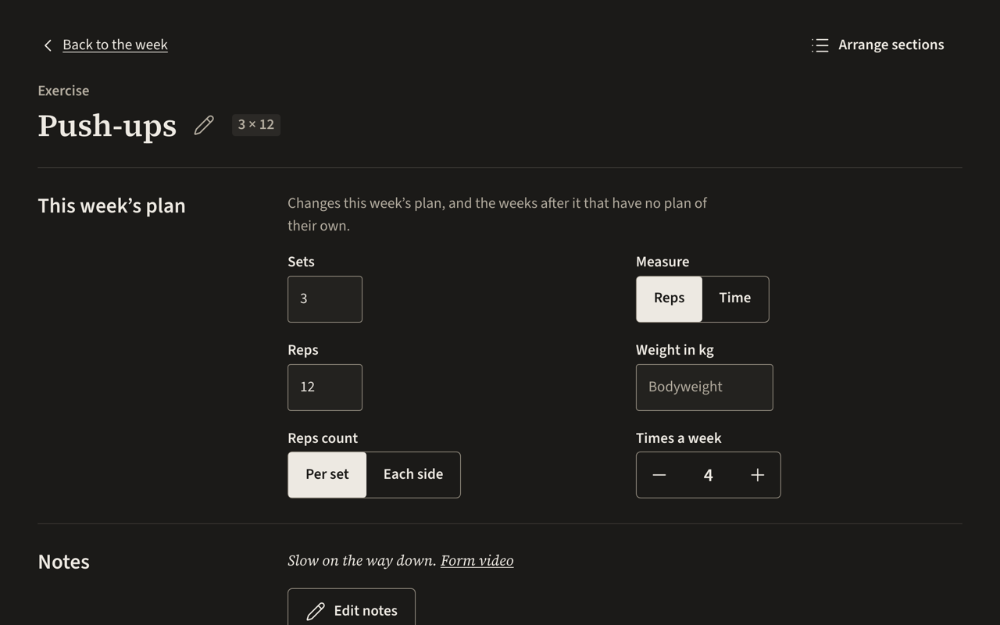<figcaption class="caption">Desktop · Dark</figcaption></figure>
</div>
<div class="phones">
<figure>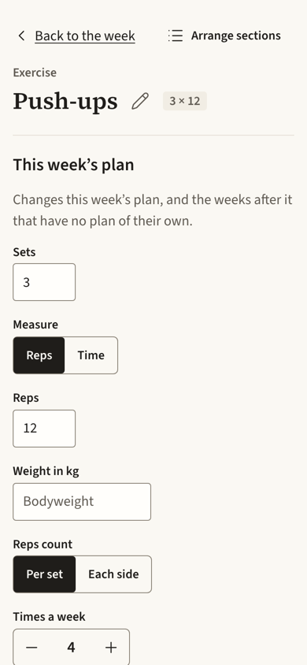<figcaption class="caption">Phone · Light</figcaption></figure>
<figure>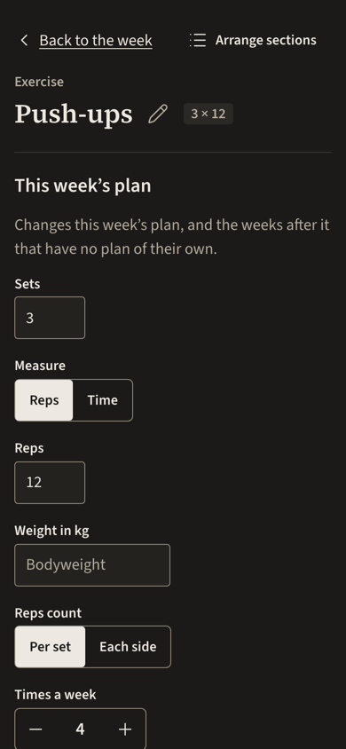<figcaption class="caption">Phone · Dark</figcaption></figure>
</div>
</section><section class="option" id="b" aria-labelledby="b-h">
  <div class="option-head"><h2 class="title-2" id="b-h">B. The pen at the end of the title line</h2><span class="label option-tag">Question 1 · Option B</span></div>
  
  <p class="body">After the chips, so the name and its chips read as one line and the pen ends it.</p>
  <div class="shots">
<figure>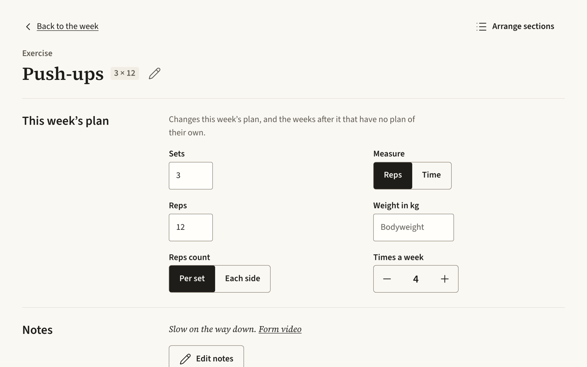<figcaption class="caption">Desktop · Light</figcaption></figure>
<figure><figcaption class="caption">Desktop · Dark</figcaption></figure>
</div>
<div class="phones">
<figure>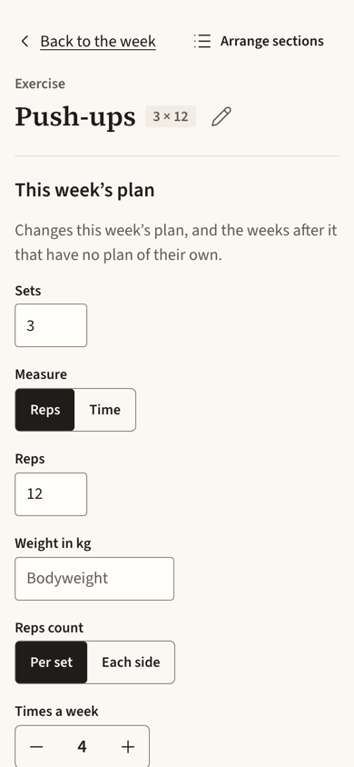<figcaption class="caption">Phone · Light</figcaption></figure>
<figure>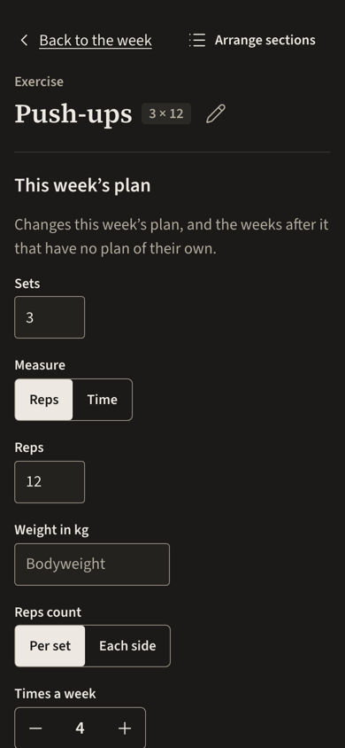<figcaption class="caption">Phone · Dark</figcaption></figure>
</div>
</section><section class="option" id="e1" data-recommended aria-labelledby="e1-h">
  <div class="option-head"><h2 class="title-2" id="e1-h">E1. Typing in the title's own type</h2><span class="label option-tag">Question 2 · Option E1</span></div>
  
  <p class="body">The field keeps the title's serif and size, so the name stays where it was and only gains a box. Done saves it. The chips come back after it.</p>
  <div class="shots">
<figure>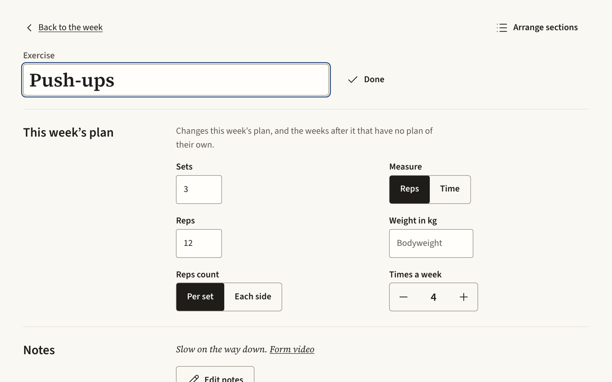<figcaption class="caption">Desktop · Light</figcaption></figure>
<figure>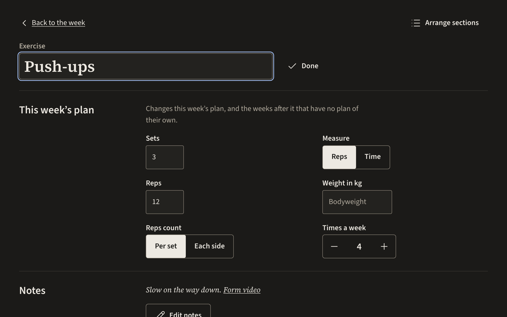<figcaption class="caption">Desktop · Dark</figcaption></figure>
</div>
<div class="phones">
<figure>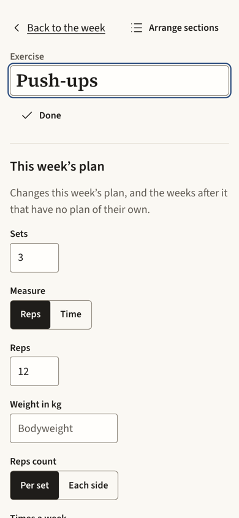<figcaption class="caption">Phone · Light</figcaption></figure>
<figure>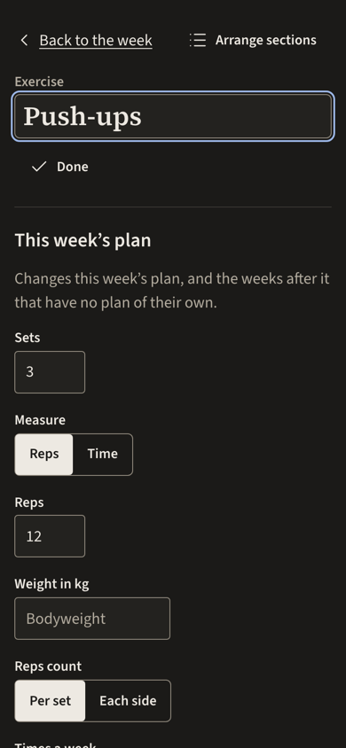<figcaption class="caption">Phone · Dark</figcaption></figure>
</div>
</section><section class="option" id="e2" aria-labelledby="e2-h">
  <div class="option-head"><h2 class="title-2" id="e2-h">E2. The standard Name field</h2><span class="label option-tag">Question 2 · Option E2</span></div>
  
  <p class="body">The system's TextField labelled Name, as Edit plan shows it today, with Done beside it.</p>
  <div class="shots">
<figure>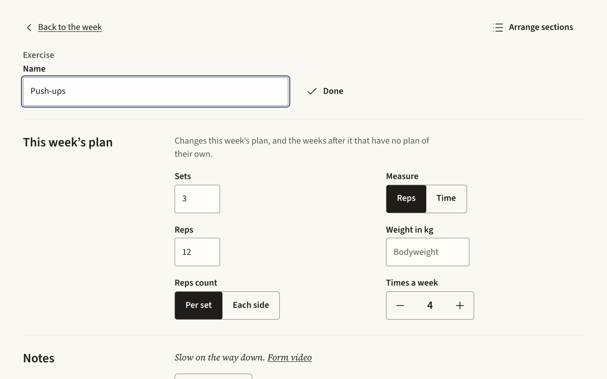<figcaption class="caption">Desktop · Light</figcaption></figure>
<figure>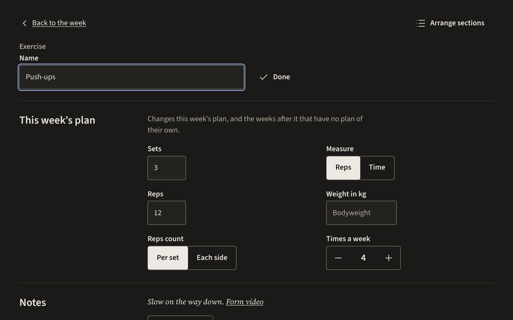<figcaption class="caption">Desktop · Dark</figcaption></figure>
</div>
<div class="phones">
<figure>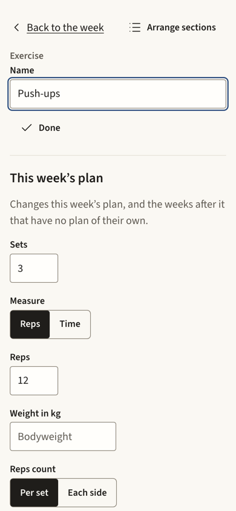<figcaption class="caption">Phone · Light</figcaption></figure>
<figure>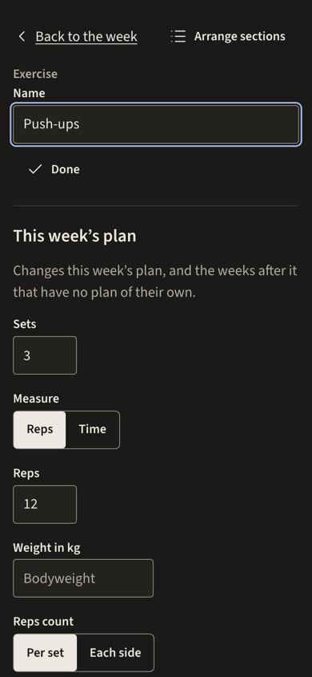<figcaption class="caption">Phone · Dark</figcaption></figure>
</div>
</section><section class="option" id="remove" aria-labelledby="remove-h">
  <div class="option-head"><h2 class="title-2" id="remove-h">Remove, at the foot of the page</h2><span class="label option-tag">Both modes</span></div>
  
  <p class="body">Remove now shows outside Edit plan too, so it is the one way to take an item off the week once the row's trash can goes. It is today's Edit plan section, unchanged.</p>
  <div class="shots">
<figure>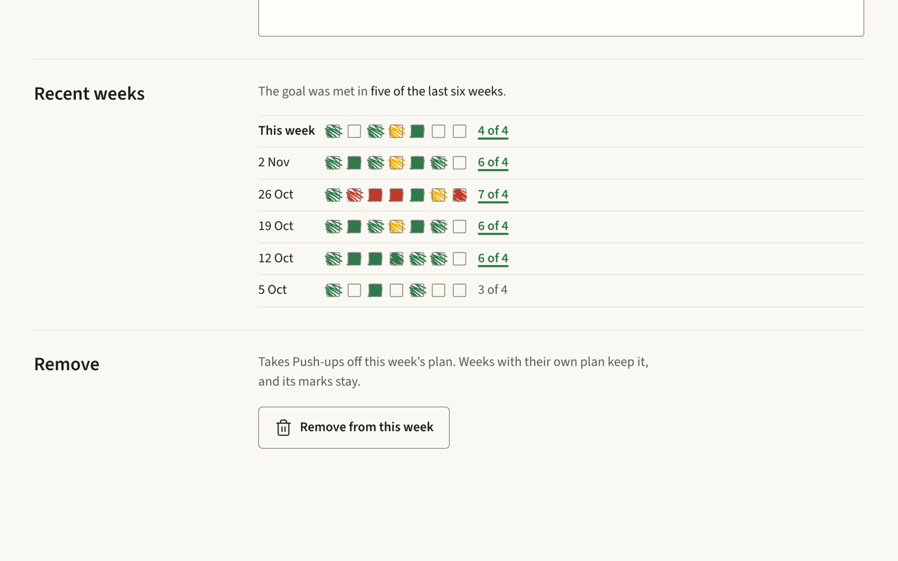<figcaption class="caption">Desktop · Light</figcaption></figure>
<figure>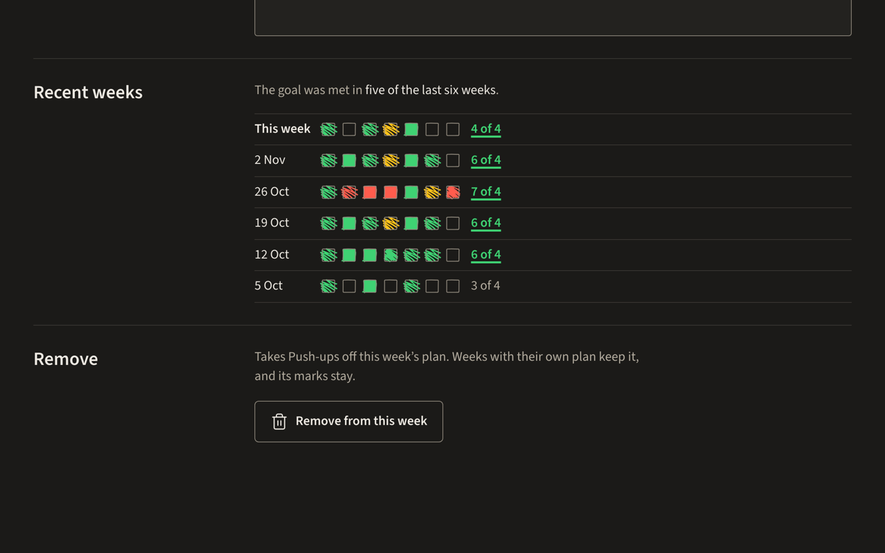<figcaption class="caption">Desktop · Dark</figcaption></figure>
</div>
<div class="phones">
<figure>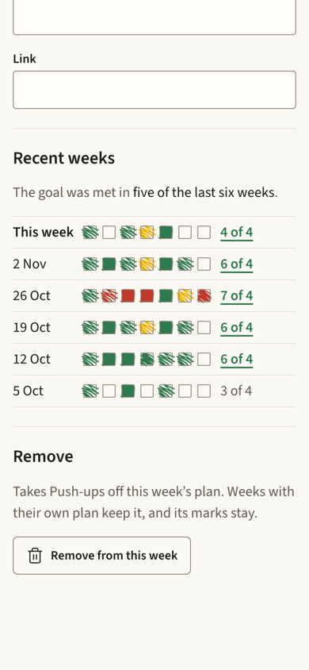<figcaption class="caption">Phone · Light</figcaption></figure>
<figure>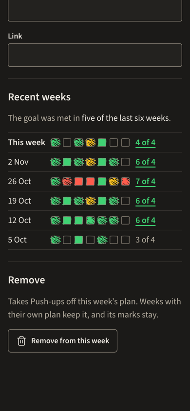<figcaption class="caption">Phone · Dark</figcaption></figure>
</div>
</section>
</main>
